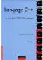
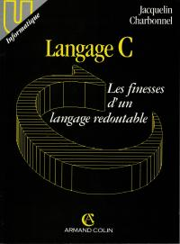
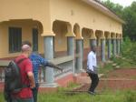
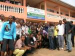
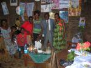

Jacquelin Charbonnel
Archive de cours
Publications
Langage C++ : le standard ANSI/ISO expliqué — Jacquelin Charbonnel — Dunod 1999 |
 |
Langage C++ : les spécifications du standard ANSI/ISO expliquées — Jacquelin Charbonnel — InterEdition 1997 |
|
Langage C++ : la proposition de standard ANSI/ISO expliquée — Jacquelin Charbonnel — Masson 1996 |
|
Langage C : les finesses d’un langage redoutable — Jacquelin Charbonnel — Armand Colin 1992 |
 |
Coopération
Labé, septembre 2013 |
Collaboration Université de Labé, Guinée |
 |
Yaoundé, mars 2012 |
Collaboration IFTIC-SUP, Cameroun |
 |
Yaoundé, novembre 2010 |
Collaboration Institut Africain d’Informatique, Cameroun |
 |
Yaoundé, février 2010 |
Collaboration Institut Africain d’Informatique, Cameroun |
|
Libreville, décembre 2009 |
Collaboration Institut Africain d’Informatique, Gabon |
|
Yaoundé, décembre 2009 |
Collaboration Institut Africain d’Informatique, Cameroun |
|
Lomé, février 2000 |
Collaboration ESIBA, Togo |
|
Saint Domingue, 1999 |
Aide technique à l’ONG Funredes |

Distinctions
-
Cristal collectif du CNRS 2021 pour la PLM-team de Mathrice